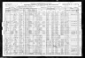

≡
Thomas Family Database
Individuals
Surnames
Families
Events
Places
Media
Thumbnails
Statistics

Agatha Wolanski 1920 census
Media
Agatha_Wolanski_1920_census
References
110 W. Carey Street
Wolanski, Agatha
Wolanski, John Jozef
Sanko, Poland
Wolanski, John Jozef
Bartender at family saloon
Wolanski, John Jozef
Became a naturalized citizen of the United States
Wolanski, Agatha
Wolanski, John Jozef
Wolanski, Agatha
Immigrated to the United States
Wolanski, John Jozef